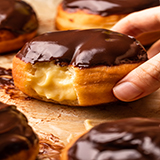
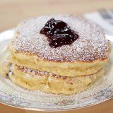
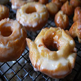

Welcome to Doughnuts!
Aside from being a tasty treat, it is also relatively cheap. A dessert available to any ages, doughnuts are hugely popular in any other parts of the world. In some cases, other variants of doughnuts are only exclusive on one place.
Different Kinds of Doughnuts
Boston Cream
Jelly
Sprinkled
Sour Cream
Over the years, many people began experimenting in creating different flavors for doughnuts. With more and more ingredients discovered, people began changing the traditional doughnut's typical bread with hole in the middle with creative kinds of flavoring.
Fun Facts About Doughnuts
- Over 10 billion doughnuts are made in the U.S. each year.
- Some people even have the word "Doughnut" or "Donut" as their last name.
- "Spudnuts" have dough made of potatoes instead of flour.
- Dougnuts were served to soldiers during WWII
- There are dates that are reserved for different kinds of doughnuts LOL.
News and Events
Make this unique type of doughnut!
Seeing this article made me realize that there is more than just a way to make unique kinds of doughnuts. Chabad.org has a new recipe that will make your mouth water for one. I am very excited to announce that I have found a new recipe that will make your doughnut making needs much more interesting and fun. Yes, doughnuts are traditionally sweet, but the dough itself is akin to a bread dough, so it can go either way.
In Philippines, all ages love to eat doughnut. I will always know the difference of the doughnuts they sell here in Canada and the ones they sell back in my country. Stores there loves giving a basic doughnuts bunch of sweet flavors that they think will sell successfully. If you are creative enough, you will never run out of ideas on spicing things up especially in a dessert food.
Downside of wanting more doughnuts to eat in Philippines is how expensive each doughnut is. With only a limited budget, once a month my Grandmother always buys us doughnuts from Dunkin’ Donuts after going to church. As I grow up, I always wonder why buy doughnuts when there is recipe out there that makes it easier to make them.
Anyway, I tasted many doughnuts over the years, and I am really interested in creating unique flavors that everyone can enjoy. With this unique doughnut recipe, it could be the start of your journey in exploring more about doughnuts. The recipe and directions for this recipe is not as hard as you think, although sometimes they can be hard to understand as a beginner. This recipe is not the only unique ones out there. There are many more kinds of doughnut recipe you should try that might impress you even more. Always be ready in trying out new stuff!
Read MoreWhat's New and Exciting!
Yes, doughnuts are traditionally sweet, but the dough itself is akin to a bread dough, so it can actually go either way. These may not be for everyone, but if you’re feeling adventurous, why not give it a try? It’s a traditional doughnut dough, rolled in zaatar spice mix, and filled with confit tomatoes. There are enough nights of Chanukah to go sweet AND savory.
The priciest doughnut on the planet is filled with champagne and topped with 24-karat gold. It’s called the Golden Cristal Ube, and a dozen will set you back $1,200. The world’s most most expensive doughnut is featured in an upcoming episode of CNBC’s “Secret Lives of the Super Rich.”
Why stop at adding cereal to a doughnut? What about adding some cookie crunch instead? This beautiful doughnut is coated in Oreo cookie crumbs and icing. All that’s missing is a glass of milk to wash it down.
Questions?
If you have any more ideas or facts about doughnuts, feel free to email us HERE! or ask us any questions about doughnuts!